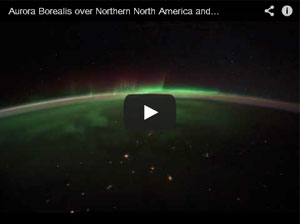

What are the Northern Lights?
The bright dancing lights of the aurora are actually collisions between electrically charged particles from the sun that enter the earth's atmosphere. The lights are seen above the magnetic poles of the northern and southern hemispheres. They are known as 'Aurora borealis' in the north and 'Aurora australis' in the south...
Auroral displays appear in many colours although pale green and pink are the most common. Shades of red, yellow, green, blue, and violet have been reported. The lights appear in many forms from patches or scattered clouds of light to streamers, arcs, rippling curtains or shooting rays that light up the sky with an eerie glow.